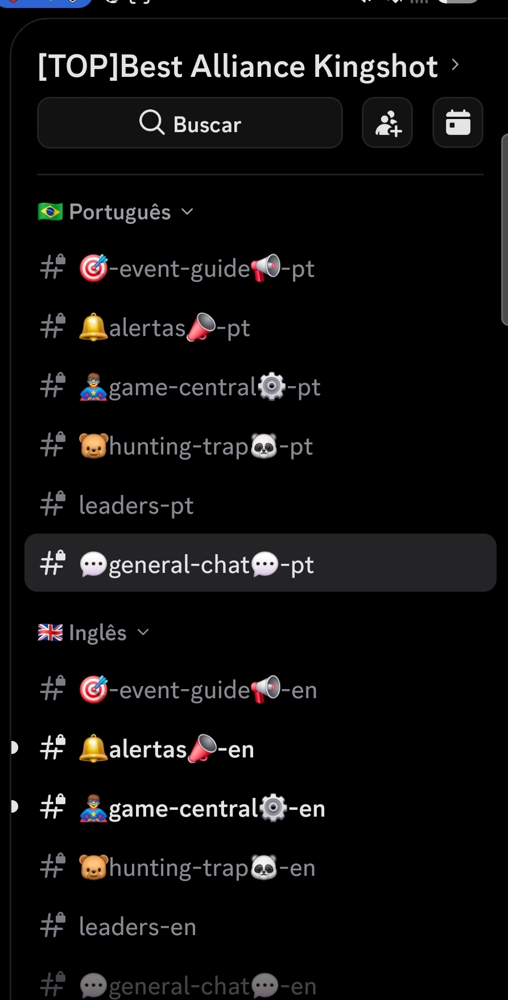
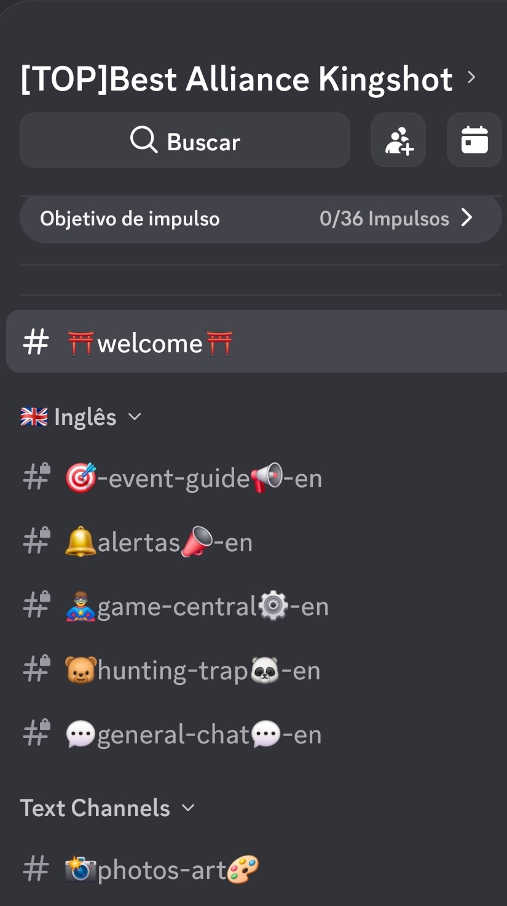

Um servidor.
Todas as línguas.
One server.
Every language.
Cada pessoa escreve na língua dela e lê todo mundo na dela. Mesma conversa, ao mesmo tempo, sem ninguém digitar comando nenhum. Everyone writes in their own language and reads everyone else in theirs. Same conversation, same moment, nobody typing a command.
Grátis para sempre · sem cartão · funcionando em menos de um minuto Free forever · no card · working in under a minute
Anyone joining the bear at 8pm?
هل سينضم أحد إلى الدب الساعة 8 مساءً؟
Escreva ali em cima, na sua língua. É o mesmo tradutor do plano grátis — o pago usa DeepL ou Azure, que são melhores. Type up there, in your own language. This is the free plan's translator — the paid one uses DeepL or Azure, which are better.
Cada língua ganha a sua própria ala do servidor Each language gets its own wing of the server
É uma ideia só, e depois que se vê uma vez não se esquece. O CYRON copia os canais que você já tem, uma vez por idioma, e agrupa cada cópia numa categoria. It's a single idea, and once you see it you don't forget it. CYRON copies the channels you already have, once per language, and groups each copy into its own category.

-
Você fala na sala da sua línguaYou speak in your language's room
Escreveu em
#general-chat-pt? Sua fala aparece em#general-chat-enjá em inglês — com o seu nome e a sua foto. Lá parece que você escreveu em inglês. Wrote in#general-chat-pt? Your line shows up in#general-chat-enalready in English — with your name and your avatar. Over there it looks like you wrote it in English. -
Quem entra só vê a ala deleNew members only see their own wing
A pessoa escolhe o idioma na entrada e recebe as chaves daquela categoria. Ela não vê sete cópias do servidor: vê um servidor, na língua dela.
People pick a language at the door and get the keys to that category. They don't see seven copies of the server: they see one server, in their language.

O mesmo servidor, visto por quem escolheu inglês. A ala portuguesa não está escondida — para ele ela não existe. The same server, seen by someone who picked English. The Portuguese wing isn't hidden — for them it doesn't exist. - Sem a marca do idioma, não é traduzidoNo language tag, no translation Canal de voz, galeria de fotos, o que for: canal que não termina com o código do idioma fica de fora, e continua sendo de todo mundo. É assim que você escolhe o que entra. Voice, photo galleries, whatever: a channel that doesn't end with a language code stays out of it, and stays shared by everyone. That's how you choose what's in.
- Você publica uma vezYou post once O anúncio vai no canal de sempre e chega traduzido em todas as alas. Ninguém escreve a mesma coisa sete vezes. The announcement goes in the usual channel and lands translated in every wing. Nobody writes the same thing seven times.
Da instalação à primeira tradução From install to first translation
São cinco passos, e três acontecem sozinhos. O tempo total é o que você leva para clicar em “Autorizar”. Five steps, and three happen on their own. The total time is however long it takes you to click “Authorize”.
Ver o passo a passoSee the walkthroughLer na sua língua, ou viver nela Read in your language, or live in it
É esta a diferença entre os planos — e não um número maior. Uma é sob demanda; a outra é o servidor inteiro funcionando de outro jeito. This is what separates the plans — not a bigger number. One is on demand; the other is the whole server running differently.
Tradução quando alguém pedeTranslation when someone asks
Nada é construído, nada muda de lugar no seu servidor. A tradução acontece quando uma pessoa quer ler — e só para ela. Nothing gets built, nothing moves in your server. Translation happens when a person wants to read — and only for them.
- Reagiu com a bandeira, recebeu a mensagem traduzida no privado. Qualquer bandeira: 🇲🇽 vale, não só 🇪🇸.React with your flag, get that message translated in your DMs. Any flag: 🇲🇽 counts, not just 🇪🇸.
- Botão de tradução embaixo dos avisos, com os 20 idiomas.Translate button under announcements, with all 20 languages.
- Sem limite de idioma, sem limite de gente.No language limit, no member limit.
- O bot fala com cada pessoa na língua dela.The bot talks to each person in their own language.
O servidor inteiro, em cada línguaThe whole server, in every language
As alas por idioma da seção acima. A conversa acontece traduzida para todo mundo ao mesmo tempo, sem ninguém pedir nada. The language wings from the section above. The conversation happens translated for everyone at once, with nobody asking for anything.
- Salas de conversa espelhadas — a mesma conversa, uma sala por língua.Mirrored chat rooms — one conversation, one room per language.
- Cópias dos seus canais — anúncio, evento, regras, tudo traduzido.Copies of your channels — announcements, events, rules, all translated.
- Categoria por idioma, montada e mantida sozinha.A category per language, built and maintained on its own.
- Até 20 idiomas convivendo.Up to 20 languages living together.
Comece de graça. Pague quando o servidor crescer.Start free. Pay when the server grows.
| GrátisFree | PagoPaid | |
|---|---|---|
| R$ 0 $0 | R$ 79 $15 /mês/mo | |
| Tradução por bandeiraFlag translation | ilimitadaunlimited | ilimitadaunlimited |
| Botão de tradução nos avisosTranslate button on notices | ✓ | ✓ |
| Salas de conversa espelhadasMirrored chat rooms | — | ✓ |
| Categorias e cópias por idiomaPer-language categories and copies | — | ✓ |
| Idiomas convivendo no servidorLanguages living in the server | — | 20 |
| Canais que o bot traduzChannels the bot translates | — | 10 |
| Cota diária do tradutor incluídoDaily quota on the included translator | 8 mil caracteres8k characters | 40 mil caracteres40k characters |
| Chave própria de tradutor (sem teto)Your own translator key (no ceiling) | ✓ | ✓ |
| Glossário de nomes e siglasGlossary of names and tags | ✓ | ✓ |
Não é protótipoNot a prototype
O CYRON nasceu para uma aliança de Kingshot com gente de oito línguas na mesma sala, e roda lá todo dia. Num único dia foram 1.777 traduções entregues — número medido, não estimado. CYRON was built for a Kingshot alliance with eight languages in one room, and it runs there every day. In a single day it delivered 1,777 translations — measured, not estimated.
O que costumam perguntarWhat people usually ask
Preciso configurar alguma coisa?Do I have to configure anything?
Não. Ele entra, cria o canal onde as pessoas escolhem o idioma e um painel com botões, e começa a funcionar. Se você nunca abrir o painel, continua funcionando. No. It joins, creates the channel where people pick their language plus a panel with buttons, and starts working. If you never open the panel, it keeps working.
Ele lê tudo o que escrevem no meu servidor?Does it read everything in my server?
Ele lê os canais que você mandou traduzir — é o que traduzir quer dizer. O texto vai ao serviço de tradução e volta; fica guardado só um cache de frases curtas repetidas, para não pagar duas vezes pela mesma frase. Nada de mensagem privada, e nada é vendido a ninguém. It reads the channels you told it to translate — that's what translating means. The text goes to the translation service and comes back; only a cache of short repeated phrases is kept, so the same sentence isn't paid for twice. No DMs, and nothing is sold to anyone.
E se o tradutor errar?What if the translation is wrong?
Vai errar às vezes — tradução automática erra. Duas coisas ajudam: o glossário, onde você lista nomes, siglas e apelidos que não devem ser traduzidos, e o selo de origem em cada mensagem, que mostra de qual língua ela veio. Sometimes, yes — machine translation gets things wrong. Two things help: the glossary, where you list names, tags and nicknames that must not be translated, and the origin stamp on every message showing which language it came from.
Vai encher meu servidor de canal?Will it flood my server with channels?
Só cria cópia dos canais que você apontou, e só das línguas que alguém de fato escolheu. Quatro canais e três línguas são doze canais, agrupados em três categorias que ficam fechadas para quem não é daquela língua. No plano grátis ele não cria nada. It only copies the channels you pointed at, and only for languages someone actually picked. Four channels and three languages is twelve channels, grouped into three categories that stay closed to everyone else. On the free plan it creates nothing.
Serve para servidor que não é de jogo?Does it work for non-gaming servers?
Serve. O CYRON não sabe o que é um urso nem o que é uma aliança: ele copia os canais que já existem no seu servidor. Quem tem um #receitas ganha receitas-pt e receitas-en. É por não saber do que vocês falam que ele serve para qualquer assunto.
It does. CYRON doesn't know what a bear or an alliance is: it mirrors the channels your server already has. If you have a #recipes, you get recipes-pt and recipes-en. It's precisely by not knowing your subject that it fits any of them.
Posso cancelar quando quiser?Can I cancel any time?
Pode. Assinatura mensal, cancelamento pelo próprio Stripe. No fim do período já pago o servidor volta ao grátis — e os canais que existem não são apagados. Yes. Monthly subscription, cancelled through Stripe itself. At the end of the period you already paid for, the server falls back to Free — and the channels that exist are not deleted.
Põe no seu servidor e vê.Put it in your server and see.
Instala sozinho, traduz na mesma hora, e o plano grátis não vence nunca. It installs itself, translates right away, and the free plan never expires.
Adicionar ao DiscordAdd to Discord